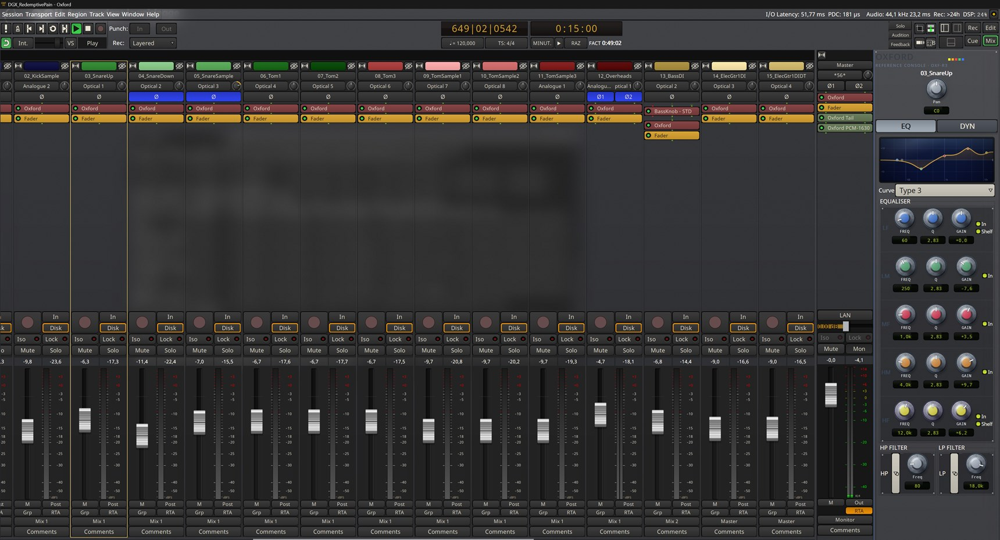
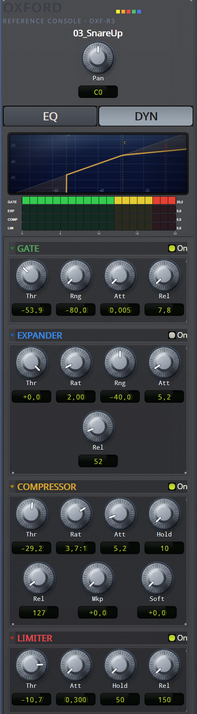
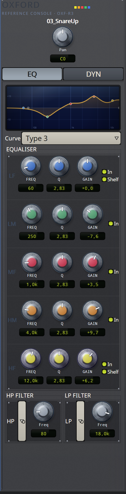
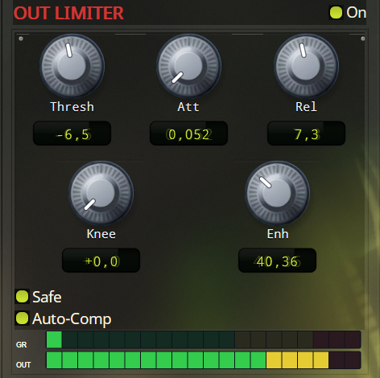
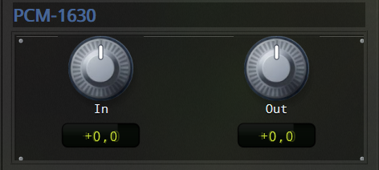
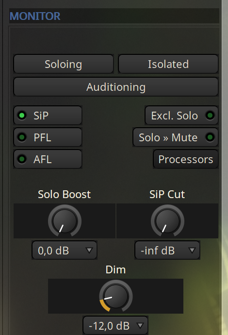

Un fork d'Ardour où la tranche de console est câblée dans chaque piste, et non ajoutée en plugin.
A fork of Ardour where the channel strip is wired into every track rather than added as a plugin.
Tout ce qui colore le son est modelé sur du matériel Sony du milieu des années 90, dans l'ordre où le signal le traversait : le magnétophone numérique PCM-3348 à la prise, en tête de chaque piste ; la console OXF-R3 pour l'EQ, la dynamique et son propre convertisseur de sortie ; le convertisseur de mastering PCM-1630 tout en bout de master. Le DSP est écrit de zéro.
Everything that colours the sound is modelled on mid-1990s Sony hardware, in the order the signal passed through it: the PCM-3348 digital recorder at the head of every track; the OXF-R3 console for EQ, dynamics and its own output converter; the PCM-1630 mastering converter at the very end of the master. The DSP is written from scratch.
Toutes les images de cette page sont des captures du logiciel.
Every image on this page is a screenshot of the software.
Le panneau est ancré au bord droit du mixer et suit la piste sélectionnée. Tout s'y règle sans ouvrir la moindre fenêtre. Dans les tranches, la ligne Oxford est le processeur lui-même : il est à sa place dans la chaîne, et il se bypasse comme les autres.
The panel is docked to the right edge of the mixer and follows the selected track. Everything is set there without opening a single window. In the strips, the Oxford entry is the processor itself: it sits in its place in the chain, and bypasses like any other.

Quatre étages en série sur chaque voie : gate, expandeur, compresseur, limiteur. En haut, la courbe de transfert des quatre réunis, avec les seuils repérés G, C et L, et un point qui suit le signal. En dessous, la réduction de chaque étage.
Four stages in series on every channel: gate, expander, compressor, limiter. At the top, the combined transfer curve with the thresholds marked G, C and L, and a dot tracking the signal. Below it, each stage's reduction.
La détection est en feed-forward, comme sur l'unité d'origine : la réduction se calcule sur le niveau d'entrée, rien ne revient de la sortie, et tout le détecteur travaille en décibels. Le limiteur fait exception en visant le niveau de sortie, après le compresseur et son makeup.
Detection is feed-forward, as on the original unit: reduction is computed from the input level, nothing is fed back from the output, and the whole detector works in decibels. The limiter is the exception, aiming at the output level, after the compressor and its makeup.
Un clic sur le nom d'une section la replie.
Clicking a section name folds it away.

Les cinq pastilles se déplacent à la souris : horizontalement la fréquence, verticalement le gain. La molette règle le Q. Les deux pastilles crème sont les filtres HP et LP : horizontalement la fréquence, verticalement la pente, de 6 à 36 dB/oct.
The five handles move with the mouse: sideways for frequency, up and down for gain. The wheel sets Q. The two cream handles are the HP and LP filters: sideways for frequency, up and down for slope, 6 to 36 dB/oct.
La courbe tracée est la réponse réelle du filtre, calculée avec les mêmes formules que l'audio.
The curve drawn is the filter's real response, computed with the same formulas as the audio.

Modelé sur l'Oxford Limiter : c'est de là que viennent le Knee et l'Enhance, qui densifie le signal au lieu de l'écrêter. Safe borne l'attaque, Auto-Comp adapte le release au signal.
Modelled on the Oxford Limiter: that's where Knee and Enhance come from, the latter densifying the signal instead of clipping it. Safe bounds the attack, Auto-Comp adapts the release to the signal.
Il est placé après le modèle de convertisseur, tout en bout de master : le PCM-1630 recrée des crêtes, et limiter avant lui les laisserait ressortir.
It sits after the converter model, at the very end of the master: the PCM-1630 recreates peaks, and limiting before it would let them back out.

Un réseau entraîné sur un vrai convertisseur Sony PCM-1630, encadré par deux gains d'entrée et de sortie. Ce n'est pas une émulation écrite à la main mais une capture : on ne règle pas ses coefficients, seulement ce qu'on lui envoie et ce qu'on récupère. C'est un module à part sur le master, qui se bypasse comme les autres.
A network trained on a real Sony PCM-1630 converter, framed by an input and an output gain. It is not a hand-written emulation but a capture: you don't tune its coefficients, only what you feed it and what you take back. It's a separate module on the master, bypassable like the others.

La section monitor d'Ardour a quitté le bord du mixer pour venir dans le panneau, sur la vue master : modes de solo (SiP, PFL, AFL), Solo Boost et SiP Cut, Dim, Mono, coupure et inversion par côté, niveau de contrôle et choix de la sortie.
Ardour's monitor section has moved out of the mixer edge and into the panel, on the master view: solo modes (SiP, PFL, AFL), Solo Boost and SiP Cut, Dim, Mono, per-side mute and invert, control-room level and output choice.

Alt enfoncé pendant qu'on tourne un potard applique le réglage à toutes les pistes sélectionnées. Vaut aussi pour les boutons et pour les pastilles de la courbe EQ. C'est le seul schéma de cette page : un geste ne se photographie pas.
Holding Alt while turning a knob applies the setting to every selected track. It works on the buttons and on the EQ curve handles too. This is the one diagram on the page: you can't photograph a gesture.
Le châssis est légèrement translucide : le bureau transparaît derrière, flouté, teinté à 8 % de la couleur du thème actif. Les commandes, elles, restent opaques. C'est visible sur les captures ci-dessus, dans les coins.
The chassis is slightly translucent: the desktop shows through behind it, blurred, tinted at 8 % with the active theme's colour. The controls themselves stay opaque. You can see it in the corners of the screenshots above.
Oxford dérive d'Ardour et suit sa licence GPL. Les sources sont dans le dépôt, l'installateur dans les releases.
Oxford derives from Ardour and follows its GPL licence. The source is in the repository, the installer in the releases.
Lis la configuration requise avant : il y a un prérequis processeur qui ne pardonne pas.
Read the requirements first: there is one CPU prerequisite that does not forgive.